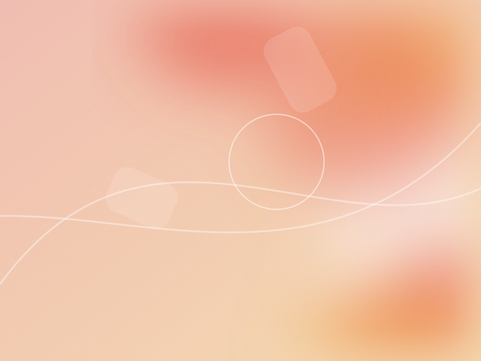
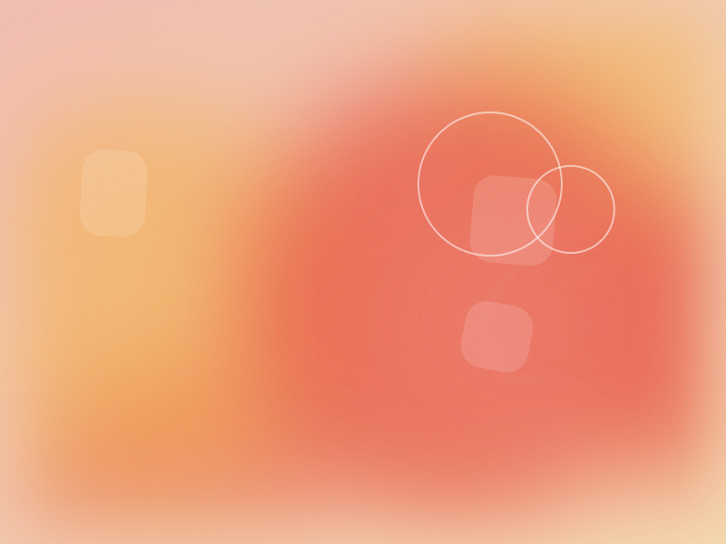
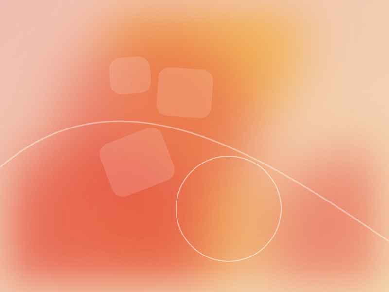
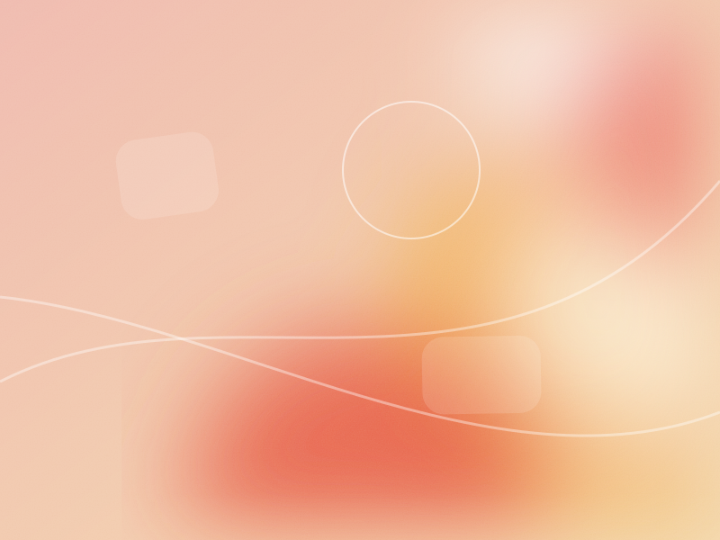
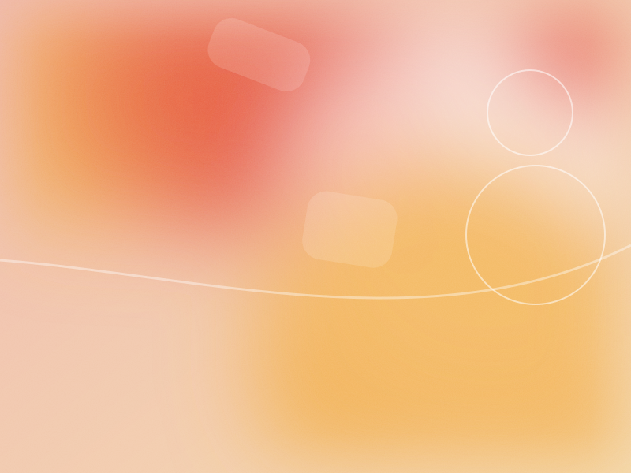
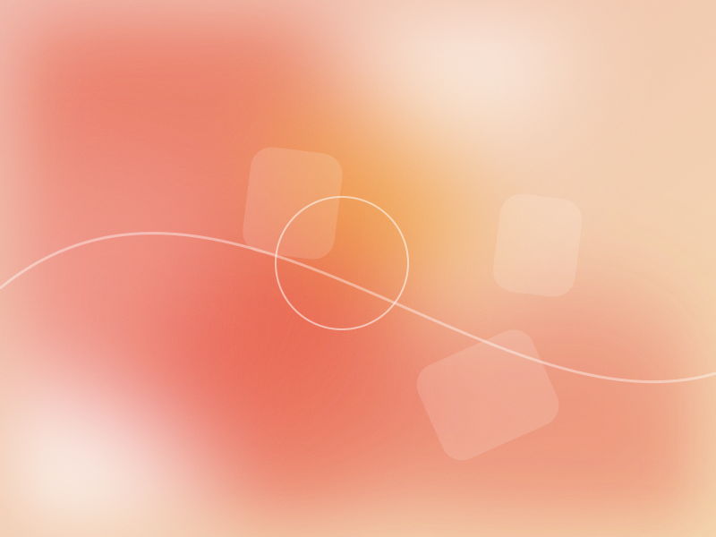
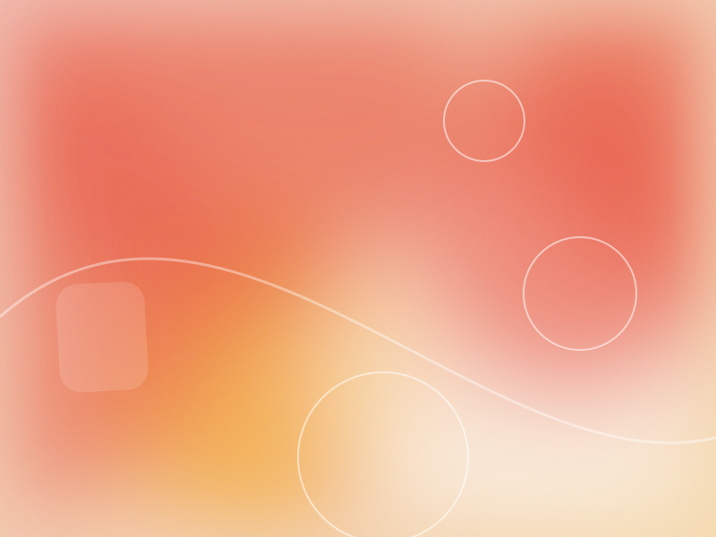
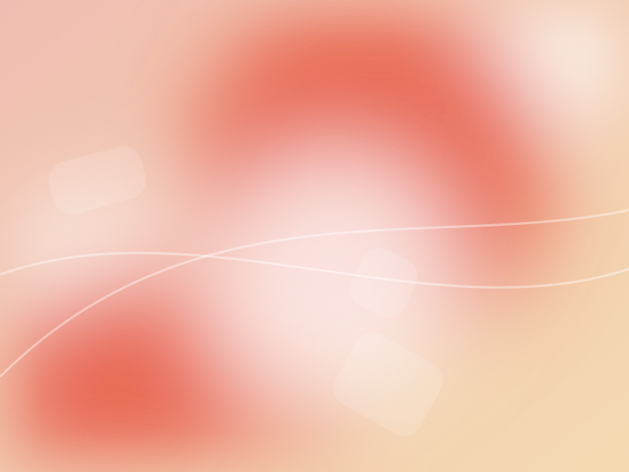
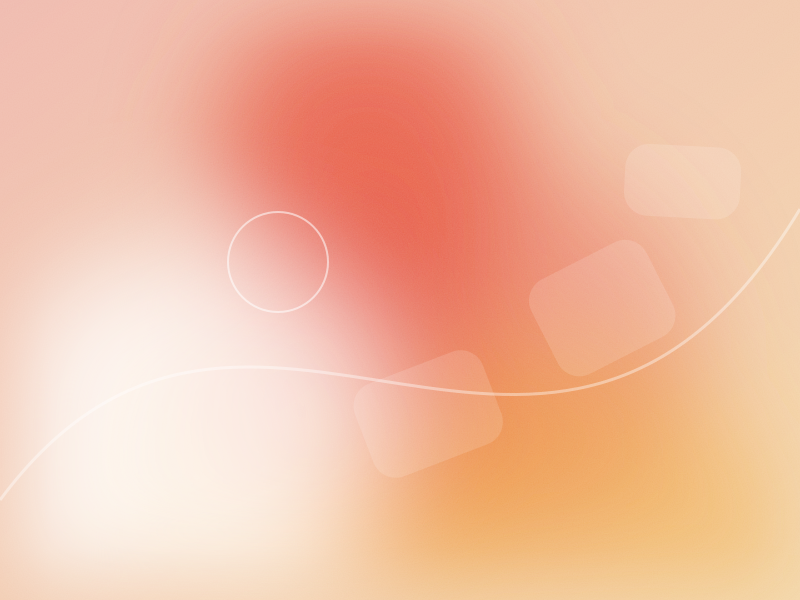

Small community ideas with a wider ripple.
SIGNAL CURRENT
MONDAY EDITION · CONCEPT
Today, in
perspective.
A calmer kind of news desk. Fictional headlines, thoughtful angles, and no live feeds.
More context, less noise.
Signal Current is an editorial concept built around clarity, curiosity, and human-scale stories.
Creative work, thoughtful objects, and the people behind them.
Useful discoveries explained without the jargon.
Why green spaces sound different.
Trees, water, and open ground change how a place feels. This fictional explainer connects a research question to an everyday walk.
Notice the difference between a busy road and a leafy path.
Pay attention to shade, birds, wind, and how people use the space.
Good reporting starts with a specific, answerable question.
Made-up stories, honestly labeled.
Every headline on this page is an interface example, not current reporting.
This concept does not connect to news sources or external services.
Topic filters keep discovery simple and the page easy to scan.
Ideas for your next coffee break.
How a second life can make an everyday object more interesting.
A fictional neighborhood story about shared green space.
A beginner's guide to noticing familiar constellations.
Clear, considered, and kind.
NO CLICKBAITMORE CONTEXTHUMAN STORIESFICTIONAL DEMO
A quick note from the desk.
No. They are fictional copy for a news-site prototype.
Use a story's save button; it changes state only for this visit.
There is no feed or network connection behind this demo.
Moodboard
A look inside Signal Current.
Generated art, parallax depth and glass details.






Explore
Everything in its place.
Today
Discover today at Signal Current.

Perspective
Discover perspective at Signal Current.

Stories
Discover stories at Signal Current.

Signal
Discover signal at Signal Current.
Today
Discover today at Signal Current.
Perspective
Discover perspective at Signal Current.
By the numbers
Small details, big feeling.
0Minute briefs
0Daily stories
0Fictional
0Morning edition
Kind words
What people might say.
Demo plans
Pick a pretend plan.
Log in with the demo login to choose one. Nothing is charged.
Free
$0
- Browse everything
- Save favorites
Plus
$9
- Everything in Free
- Early access
- Member badge
Studio
$19
- Everything in Plus
- Priority demo support
- Custom themes
Good to know
Quick answers.
Is this real news?
No. Every story is fictional.
Do filters work?
Yes, they filter demo stories.
Why red accents?
Bold color guides the eye.
Ready?
Today, in perspective.
No sign-up needed; this is a visual concept, and no contact details are collected.
Explore the concept